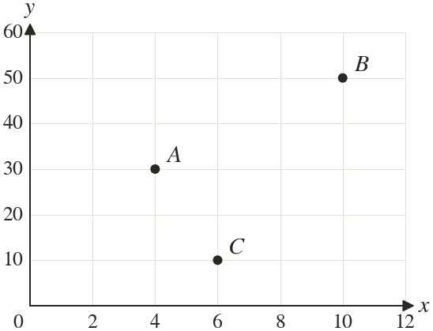
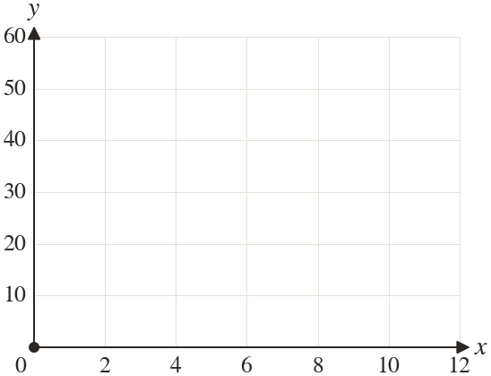

Westonbirt Maths · Coordinates, Graphs and Inequalities
Coordinate Problem Solving
Name: ______________________ Date: ____________
1
Write down the coordinates of A, B and C.

2
Plot and on the axes.

3
An x-axis goes up in steps of one square per step. Leo says is squares across. What is his mistake?
4
Each square on a y-axis is worth
What value is squares up?
What value is squares up?
5
The x-axis goes up in s and the y-axis in s. A point is squares right and squares up. Write its coordinates.
Ext
In question how far apart are A and B across: in units, and in squares?